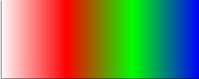

In OpenVG, VGPaint objects determine how paths are stroked and filled. A given paint object has many parameters, but only those relevant to the type of paint are used (VG_PAINT_COLOR is only applicable to paint objects of type VG_PAINT_TYPE_COLOR).
Instead of having one monolithic paint class which allows the user to set parameters that are not used by the type of paint, subclasses of the base Paint class implement the functionality relevant to each paint type: ColorPaint handles solid colors, GradientPaint handles radial and linear gradients of color, and PatternPaint handles patterns based on images.
The simplest of the paint types, ColorPaint represents a solid color such as red or blue. It takes a single parameter, color which can be a 3-tuple of colors in the RGB format (from 0.0 to 1.0) or a 4-tuple of the colors and alpha.
Usage:
#Make the stroke paint red and the fill paint translucent green
red = VG.ColorPaint((1.0, 0.0, 0.0))
translucent_green = VG.ColorPaint((0.0, 1.0, 0.0, 0.5))
VG.set_paint(red, VG_STROKE_PATH)
VG.set_paint(translucent_green, VG_FILL_PATH)
an enum that determines how OpenVG calculates the color of points that lie outside of the gradient. Possible values include:
- VG_COLOR_RAMP_SPREAD_PAD
- this is the default spread mode. Anything outside is simply mapped to the same color as the start or end stop - anything greater than 1 is the same color as the end of the gradient and anything less than 0 is the same color as the beginning of the gradient.
- VG_COLOR_RAMP_SPREAD_REPEAT
- the gradient function starts over again as if it had a period of 1.
- VG_COLOR_RAMP_SPREAD_REFLECT
- the gradient function is reflected across either 0 or 1, depending on if number is less than 0 or greater than 1, respectively.
this property is for convenience only; setting the opacity is equivalent to:
for i, (offset, color) in enumerate(gradient.stops):
R, G, B, A = color
A *= new_opacity/old_opacity
color = (R, G, B, A)
gradient.stops[i] = (offset, color)
The GradientPaint class can represent either a linear or radial gradient. Both radial and linear gradients consist of two parts: the gradient function which maps a given coordinate to a value in the range [0, 1] and a color ramp, which maps colors to each value in the range [0, 1]. For more information on how the gradient function for linear and radial gradients are defined, see the [http://www.khronos.org/openvg/ OpenVG specs].
Usage:
#Create a linear gradient going from white to red to green to blue
paint = VG.GradientPaint([(0,0), (250,0)], linear=True)
#Set the color stops
paint.stops = [(0.0, (0.0, 0.0, 0.0, 1.0)), #white
(0.333,(1.0, 0.0, 0.0, 1.0)), #red
(0.666,(0.0, 1.0, 0.0, 1.0)), #green
(1.0, (0.0, 0.0, 1.0, 1.0))] #blue
#Set the spread mode to reflect because it's prettier
paint.spread_mode = VG_COLOR_RAMP_SPREAD_REFLECT
If drawn on a 250x100 rectangle, this would result in:
Usage:
#Create a simple radial gradient going with center == focus
paint = VG.GradientPaint([(50,50), (50,50), 50], linear=False)
#Set the color stops
paint.stops = [(0.0, (0.0, 0.0, 0.0, 1.0)), #white
(0.333,(1.0, 0.0, 0.0, 1.0)), #red
(0.666,(0.0, 1.0, 0.0, 1.0)), #green
(1.0, (0.0, 0.0, 1.0, 1.0))] #blue